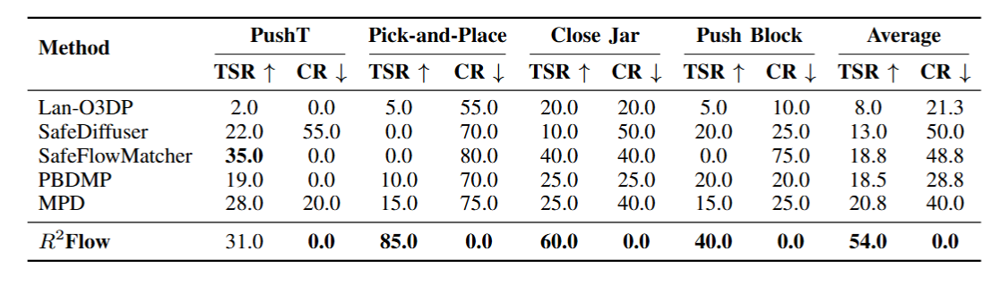
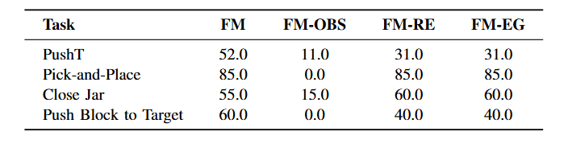
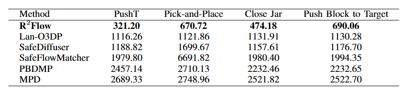
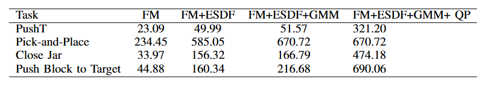
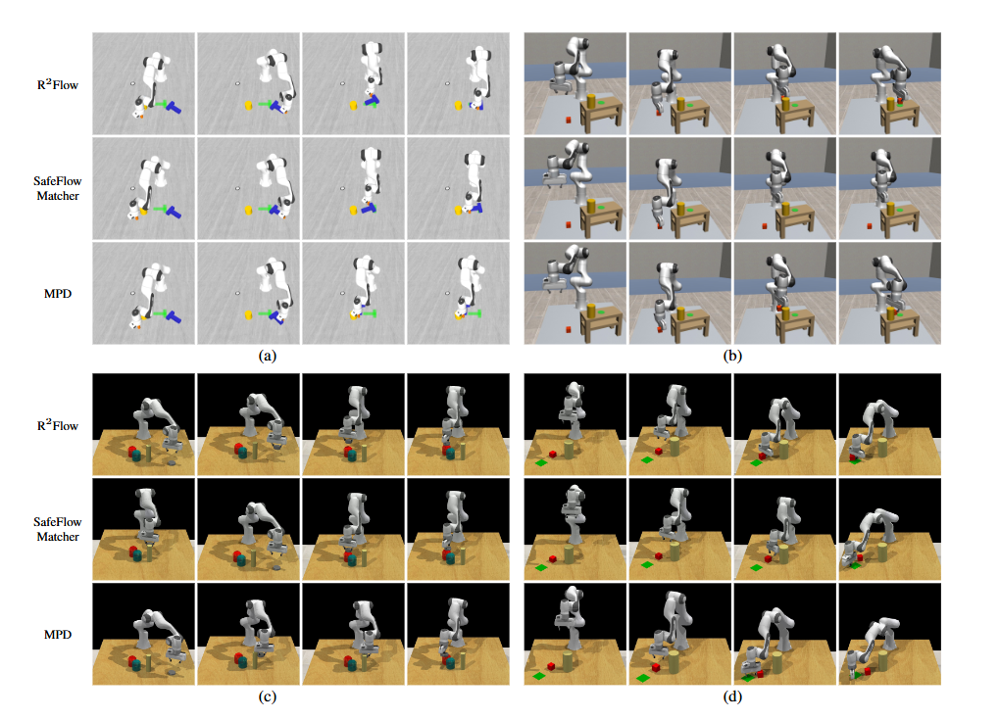
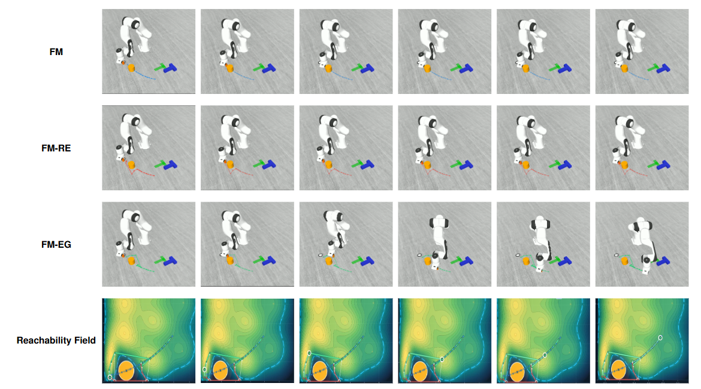
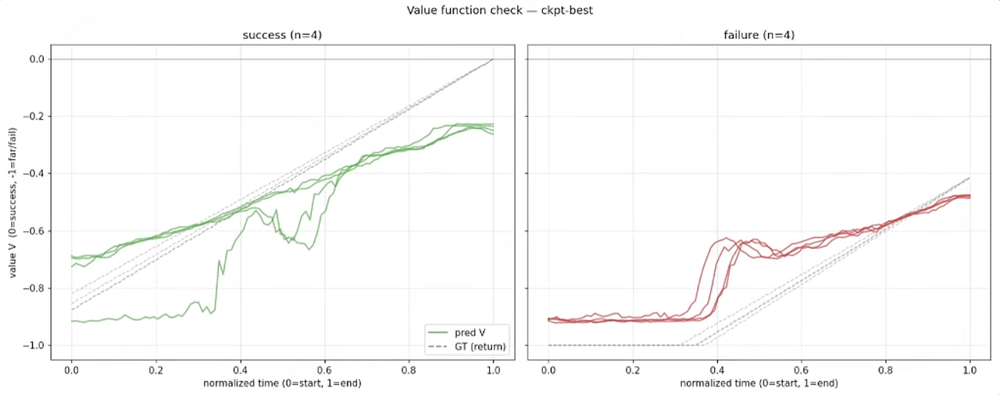
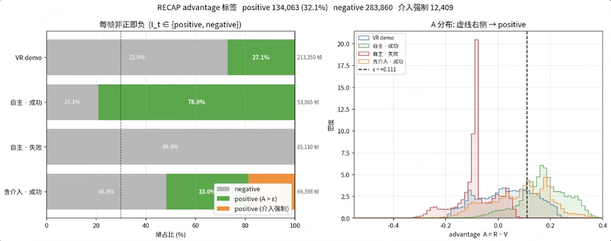
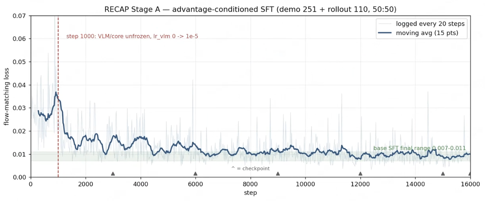

研究与项目
Flow Matching · Robot ManipulationIEEE RA-L 在投
R²Flow：无需重新训练的 Flow Matching 安全操作策略
硕士研究课题 · 2025.10 — 至今
- 问题
- 预训练操作策略遇到训练分布外障碍时容易碰撞。R²Flow 不新增示教、不更新策略参数，直接在推理阶段修正轨迹。
- 方法
- 冻结 Flow Matching 策略，在末端坐标系预计算 RC-ESDF；在线查询障碍距离梯度，并与 GMM 可达性密度梯度共同修正 ODE 速度场，姿态与夹爪指令沿用原策略。
- 结果
- MuJoCo / RLBench 四项任务平均成功率 54.0%，最优对比基线为 20.8%；160 次未见障碍评测的碰撞率为 0.0%。在 Franka Research 3 与法奥 FR3 上完成 PushT、Pick-and-Place、Close Jar 和 Push Block to Target 真机验证，并扩展到多障碍场景。
技术细节与更多演示
四项任务的成功率与碰撞率TSR 为任务成功率，CR 为碰撞率，单位均为百分比。R²Flow 平均 TSR 为 54.0%，平均 CR 为 0.0%。

约束引导模块消融
不同方法的推理耗时对比
引导模块与 QP 的耗时记录
操作任务的连续帧对比
可达性场与操作轨迹对照
任务平均成功率 · MuJoCo / RLBench
VLA · Value Model · Post-training复现项目
π0.6* RECAP：价值引导的 VLA 真机后训练
- 任务
- 面向 Rack 抓取、对位并放入 Holder 的精细操作，复现价值条件化的 VLA 后训练流程，提升放置精度与稳定性。
- 方法
- 整合 251 条遥操作示教、62 条成功 Rollout、97 条失败 Rollout 和 80 条人工介入后成功轨迹；以 Monte Carlo 回报训练 SmolVLM 帧级价值模型，再将高价值帧写入 Advantage 条件开展 VLA Post-SFT。
- 结果
- 在同一真机任务中，恒发 Positive 与恒发 Negative 条件各测试 100 次，分别成功 99 次和 76 次。
99 / 100positive 条件测试
76 / 100negative 条件测试
技术细节与更多演示
初始离线 Rollout 共 110 条，人工标注为成功 62 条、失败 48 条。后续加入更多自主执行与人工介入数据，扩充后的数据如下。
| 数据来源 | 轨迹数 | 标签 |
|---|
| 遥操示教 | 251 | Positive |
|---|
| 自主 Rollout 成功 | 62 | Positive |
|---|
| 自主 Rollout 失败 | 97 | Negative |
|---|
| 人工介入后成功 | 80 | Positive |
|---|
统一多模态观测和轨迹格式，用 Monte Carlo 回报为每帧构造价值监督，训练 SmolVLM 预测状态价值分布。人工介入轨迹保留介入区间标签。
成功与失败轨迹的价值预测图中分别抽取 4 条成功、4 条失败轨迹，对照预测价值与 Monte Carlo 回报。

按帧级预测价值排序，将 Top 30% 高价值帧标记为 Positive，其余帧标记为 Negative，生成 Advantage Label。
Advantage 标签统计与分布
优势条件化 SFT 的训练损失Post-SFT 使用 demo 251 + rollout 110，在第 1000 步解冻 VLM。

VLA · TD3 · Precision Placement真机项目
RLT：精密放置的两阶段训练与 RL 接管
- 任务
- 面向亚毫米级插入间隙的 Rack-to-Holder 放置任务，由 π0.5 VLA 完成抓取与搬运，强化学习接管最终对位和放置。
- 方法
- 先以 SFT 微调 π0.5，再冻结骨干并训练 RLT Encoder/Decoder；基于 TD3 搭建在线残差强化学习链路，并用 ResNet 与 3D 卷积时序分类器识别五类操作阶段，触发 VLA 到 RL 的策略接管。四相机 TCP 图像转发与跨主机 Client–Server Rollout 支持人工干预、结果标注和回放数据采集。
- 结果
- 累计进行 20 分钟在线 RL Rollout 后，50 次真机精密放置测试成功率达到 92%，较 π0.5 基线的 40% 提升 52 个百分点；阶段分类准确率超过 99%。
92%50 次真机测试 · 基线 40%
> 99%阶段分类准确率
技术细节与更多演示
- 以 SFT 微调 π0.5 作为任务基线；随后冻结 VLA 骨干，训练 RLT Encoder/Decoder，得到用于强化学习的紧凑策略表征。
- 采用 TD3 在线学习残差修正；VLA 负责抓取与搬运，RL 接管最终对位与放置阶段。
- 使用 ResNet 与 3D 卷积时序分类器识别五类操作阶段并给出策略接管信号，分类准确率超过 99%。
- 通过 TCP 转发四相机画面并开展跨主机 Client–Server Rollout，支持人工干预、成功 / 失败标注，并将 RL 接管片段写入 Replay Buffer。
| 问题 | 对应处理 |
|---|
| Chunk 切换抖动 | B 样条插值平滑 |
|---|
| 异步推理时动作回撤 | 抛弃过时观测，进行时间对齐 |
|---|
| Actor 输出噪声 | 将完整动作改为有界残差修正 |
|---|
| 采集与训练互相等待 | 解耦跨机 Rollout、Replay 写入与策略更新 |
|---|
Visual Subgoals · Simulation · Embodiment Transfer复现项目
LaWAM：未来状态预测与失败预判
- 任务
- 在执行前预测视觉子目标，并与机器人的真实执行轨迹比较，在精细放置任务中尽早识别偏离，为重规划提供依据。
- 方法
- 完成 SFT 后训练、非夕拂晓 4S 部署与 Isaac Sim 对照；改变预测时长、输入相机和未来状态预测视角数量，分析长时序与精细操作中的失败轨迹。
- 结果
- 复现评测在 LIBERO 四套任务中成功 1,962 / 2,000 次，在 RoboTwin 50 项任务中成功 594 / 700 次。相机对照中，本体信息较少时抓取 / 放置为 90% / 0%，可见机械臂本体时为 100% / 80%。
98.1%LIBERO · 1,962 / 2,000
84.9%RoboTwin · 594 / 700
技术细节与更多演示
使用官方代码与预训练权重进行真机抓取后训练，初期表现不佳。检查数据格式、训练参数和推理部署后，继续对预测机位和预测视角数量做对照。
进一步在 Isaac Sim 中改变相机视角，分别采集数据、训练并验证。两组记录的抓取 / 放置成功率分别为 90% / 0% 与 100% / 80%。这提示模型可能借助画面中的机械臂本体判断状态。
| 视角设置 | 抓取成功率 | 放置成功率 |
|---|
| 机械臂本体信息较少 | 90% | 0% |
|---|
| 可见机械臂本体 | 100% | 80% |
|---|
VLM · Motion Planning · Dexterous Hand
VLM 驱动的长时序自主操作架构
澳门大学 × 灵心巧手 · 校企合作项目 · 2025.12 — 2026.03
- 任务
- 将自然语言指令拆成连续的操作步骤与空间目标，驱动真机完成长时序任务。
- 真机集成
- 基于 JAKA Zu3、RealSense D435 与 Linker Hand O6，完成手眼标定、坐标变换、MoveIt 规划执行和抓取模式切换。
- 失败恢复
- 将 VLM 高层决策映射为机械臂位姿与抓取动作。每步执行后用视觉核对物体状态，抓取失败或环境变化时触发重试或重新规划，再继续后续步骤。
技术细节与更多演示
先将指令拆解为操作步骤与空间目标；通过手眼标定和坐标变换，将目标转到机械臂坐标系，再用 MoveIt 规划执行并切换抓取模式。
每步结束后用视觉核对物体状态。抓取失败或环境变化时重试或重规划，再继续后续步骤。平台为 JAKA Zu3、RealSense D435 和 Linker Hand O6。
实习经历
晶泰科技
具身智能研发岗
面向实验室制备中的 Rack 抓取、对位并精确放入 Holder，围绕 VLA 后训练与执行偏离的早期识别开展算法研发。
- 搭建 RECAP 与 RLT 后训练流程，让预训练 VLA 利用自主 Rollout、人工介入与奖励反馈继续优化，并将强化学习集中到放置阶段。
- 以 Monte Carlo 回报训练 SmolVLM 帧级价值模型并开展 Advantage 条件化 Post-SFT；基于 π0.5 / RLinf 实现 RL Token 与轻量 Actor 流程。
- 完成 LaWAM 在非夕拂晓 4S 与 Isaac Sim 中的部署，对照未来状态预测与真实执行轨迹，并测试模型对机械臂本体视觉信息的依赖。
光潆智能
机器人控制算法实习生
面向三维曲面自动雕刻，打通环绕拍摄、三维重建、曲面建模、图案贴合、路径生成与真机雕刻的完整链路。
- 控制松灵 Piper 环绕目标采集多视角图像，完成三维重建，并通过泊松表面重建生成用于图案映射与规划的 Mesh。
- 通过 GUI 将二维图案放置到目标曲面，并依据划分后的 Mesh 面片生成各 Patch 的雕刻路径。
- 将 Patch 路径转换到机械臂基坐标系，通过 ROS 2 / MoveIt 2、OMPL / RRTConnect 与 CAN 控制完成真机执行，并处理模型尺度、TCP 姿态、碰撞和目标不可达问题。